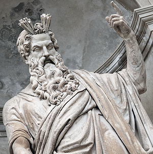

Thursday
 Thursday represents the planet Jupiter originally named after the Greek god Zues "hemera Dios", the Roman God Jupiter, “dies Jovis”, or the Norse god Thor. The English name was derived from the Norse version originally called "Thor's Day". Thor was the son of Odin in Norse culture and is the god of thunder and lightning, and also protection.